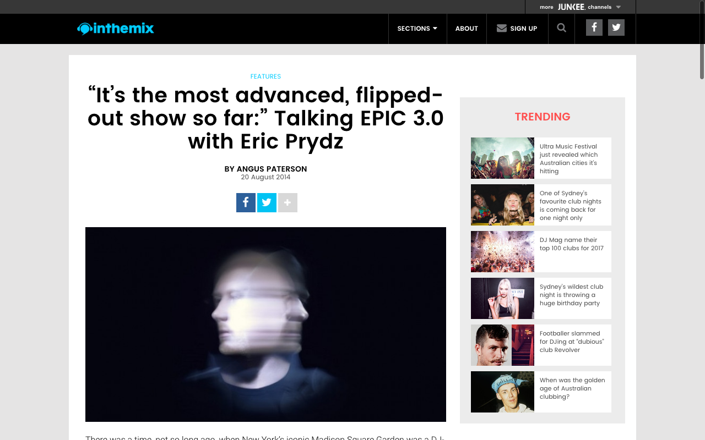

“It’s the Most Advanced, Flipped-Out Show So Far:” Eric Prydz Talks EPIC 3.0
{kind=link}

There was a time, not so long ago, when New York’s iconic Madison Square Garden was a DJ-free-zone. However, after Swedish House Mafia chose the venue for a headline show in 2011, a succession of big-name electronic acts from Above & Beyond to Hardwell have added it to their ‘must conquer’ list. Next up, Swedish powerhouse Eric Prydz is readying the latest iteration of his spectacular EPIC arena show for a ‘one night only’ booking at MSG on September 27.
“It’s crazy, to be honest,” Prydz tells inthemix when we track him down midway through a whirlwind summer of touring. “Because if you asked me a few years back, ‘Eric, do you think you’ll ever play Madison Square Garden in New York?’, I would have just laughed. Because for me, with the music I make, back then it would have felt too far away. But that’s what we’ve taken on.”
Short for ‘Eric Prydz In Concert,’ EPIC is all about creating a mesmerising audiovisual experience, with state-of-the-art holograms as the centerpiece. For the upcoming Madison Square Garden show, we can expect a major upgrade from previous iterations. Working alongside Prydz is an experienced production team that’s also willing to talk inthemix through the formidable scale of the plans.
“We’ve stepped up the resolution of the holograms dramatically from EPIC 2.0,” Liam Tomaszewski, the lead animator and VJ for the show, tells us. “We’re now able to create and display holograms with a level of detail and scale we’ve never done before. The size of EPIC 3.0 is huge. We’re creating holograms using a new material, which gives the new holograms such high resolution that they can’t even be created using conventional monitors.”
In short, we can expect an arresting visual show that complements the movements of a Prydz DJ set. “No two moments are ever the same,” Tomaszewski adds. “Like Eric’s music, the visuals to the show are a composition with nuances and layers, peaks and valleys.”
When inthemix tracks down Prydz, he’s in Europe for a series of shows, having just completed back-to-back weekends opening the Tomorrowland mainstage with three-hour sets. While he’s keeping up his regular touring commitments – including a headline slot at London’s South West Four and a back-to-back after party with Deadmau5 – EPIC 3.0 is the top priority for Prydz. Here he tells inthemix why it’s the most ambitious undertaking of his celebrated career so far.
One of the biggest developments for you has been relocating to the US, and really ingraining yourself on the festival mainstages over here. You’re truly playing your own sound.
I’d say it’s not something that I’m necessarily trying to do, just for the sake of being different. I’ve always done my own thing. Maybe I stick out because a lot of the others, they’re all kind of playing the same thing.
When you go to festivals, you hear the same tracks and the same edits. When I grew up and was going to festivals and to clubs, you went to see a DJ because he had a particular sound, a particular way that he played his records. If there was anyone else who was trying to copy him in some way, it would instantly make you cringe. “Is he trying to be Jeff Mills?” That kind of thing.
But these days it’s different, as the main headlining DJs all tend to play the same sound. So that’s more the reason why maybe I stick out. I try to stay away from trends. I think my fans would be very disappointed if I started playing a sound or style that somebody else was already playing; if I was trying to jump on this train.
One of your sets that really stood out this year was the Ultra Music Festival broadcast from Miami. In spite of how distinct the sound was from the DJs around you, it still hit so hard with the crowd.
Yeah. I think with festivals, I guess there’s a trick to it. People could say, ‘Oh this generation are all into the cheesy dance music EDM thing,’ but it’s actually not true. In some respect, the crowd can’t really tell the difference. When me and my friends were young, producing techno and stuff, we would listen to the tracks and say, “Oh, that’s not a real 909 hi-hat, it’s from a machine that’s trying to be a 909.” And we thought that mattered. We thought the track sucked simply because of that. Which is absolutely silly, and really immature, but that’s the way we thought. I think that’s the way a musician listens to music.
But these kids going to a festival, they just wanna enjoy the music, have fun and meet people, and they don’t really listen to the music in that way. They listen to the energy. And this is really important. You can have the most underground techno track ever, but if it has the right energy, it will move them in exactly the same way as a number one Hardwell record.
When you come to the point where you realise that, and if you play records in a way that the crowd knows what to expect – where exactly there will be a drop and that kind of stuff – then you can pretty much play anything you want, as long as you have the right energy.
That’s why I can play what I do on the main stage of a big commercial American festival, and people will still be hanging from the ceiling. It’s a bit of a challenge, but it’s fun. You have to re-think. You have to say, this is the kind of music that I play, but now I’m going to play a big main stage for hundreds of thousands of people.
How are you going to play the music in a different way so that it makes sense for them? With maybe Hardwell playing before, and Steve Aoki playing after? You have to put some thought into it, but it’s worked so far for me.
Does being in these settings more or more impact the kind of records you make? Has it made you gravitate towards certain sounds?
I do think that when you are on tour, the kind of gigs that you are playing influence you very much. If you are in a smaller capacity club, and you play a certain way in there and it really works, this also inspires you to play a certain kind of music later.
And if you’re playing a lot of big festivals…well, I make the sort of music that I feel is missing in my record box. So if I’m playing all these festivals, and wishing that I had a certain kind of track, which has a certain kind of energy, then I’ll just sit down and make it, and then I’ll try it out for the next festival gig. So the music I make is very much inspired by my surroundings, the shows I play and the places I go to.
You’ve obviously got your EPIC 3.0 show coming up, which is another major milestone for you.
Yeah, I’m excited about that one. EPIC has been this audiovisual show that we’ve been doing for a few years. Back when it started out, my team and I sat down and said we want to do something different, rather than just turning up to the festivals and doing the whole confetti and C02 cannons thing, the big LED walls…
All that stuff is cool, but we really wanted to take it above that – even two or three steps above that. The EPIC concert was what we came up with. After developing it for every show, now it’s going to be EPIC 3.0, which will be the most advanced, flipped-out version of EPIC so far.
And we’re only going to do it once, it’s going to be such an expensive show for us to put on. And particularly at Madison Square Garden, which is the most expensive venue in the world to put on a show; the rates they charge you for doing stuff is just crazy.
So it’s not really a money-making machine for me. I’m actually going to be losing money doing it. We want to try and keep the ticket prices down as much as possible. But EPIC has never really been about making money; it’s always been that little passion project on the side. It happens just once or twice a year alongside all the normal touring and the club shows.
Can you talk us through what we’ll see at Madison Square Garden?
EPIC 3.0 is going to be bigger and better than any of the other shows we’ve done before. It’s going to have a very special and unique laser design to it, and I’m 100-percent sure that nobody has ever seen anything like it in a dance music show. It’s going to blow people’s heads off. I’m working day and night now on new music for EPIC too, because I love doing that; all these new edits and new music just for that show. A lot of new original stuff is going to be premiered at the show, and obviously I always do EPIC edits of classic tracks just for the occasion.
EPIC is known for using holograms in the show, and the hologram we’re using for Madison Square Garden is actually bigger and better than anything we’ve ever done before. I’m actually getting so excited talking about it, because I can’t wait to see myself what it’s going to look like. It’s going to be crazy.
To be honest, Madison Square Garden is really the perfect venue for it, because it’s such a visual experience. In order to take that in, you really need to be in an arena where some of it is seated. In Madison Square Garden, you have your seated areas where you can just take the whole thing in. Obviously we have the floor tickets too for those who want to bump into other people and get sweaty, but if you really want to see EPIC 3.0 the way that it’s meant to be seen, you really need one of the seats.
Playing Madison Square Garden has become a major achievement for dance acts. Was there ever a moment where you wondered if taking on a show this massive was too ambitious?
Maybe, maybe not. Tickets wise, I know we’re gonna sell out by the looks of things, so I’m not really worried about that aspect. Obviously Madison Square Garden is a big venue. We’ve done EPIC shows in the past with kind of similar ticket sales, though not in America.
It’s kind of new territory for me, though I do think New York is my strongest city, it’s like ‘Pryda Town.’ I’ve got such a strong following there, so it felt really natural to do EPIC 3.0 there. It’s full steam ahead for us.